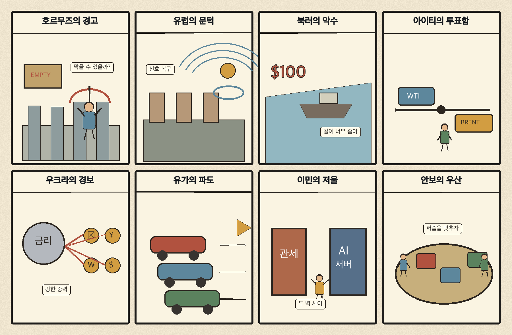
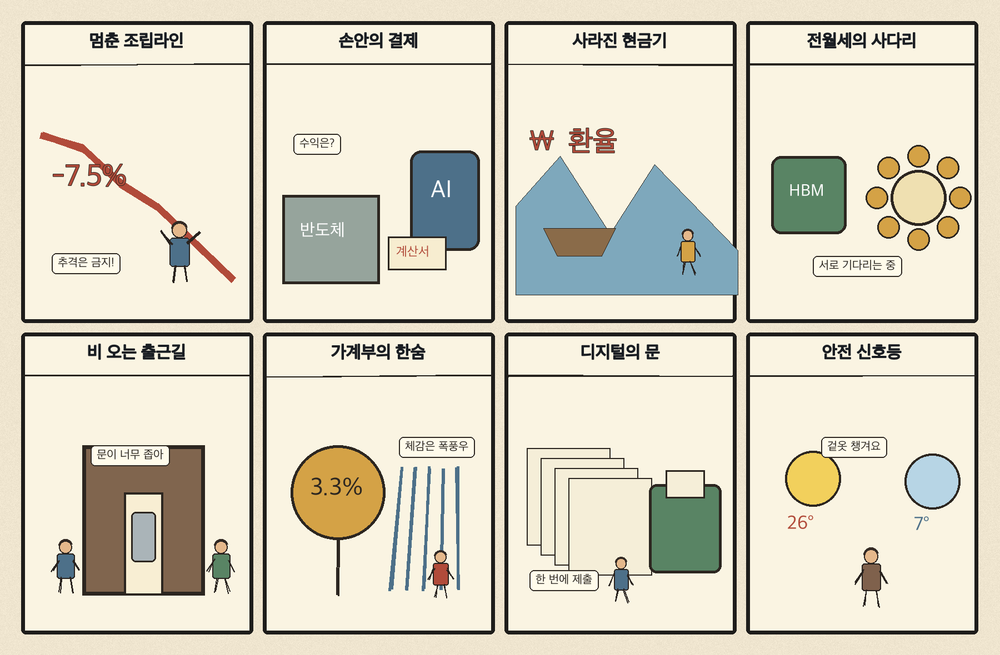

01
로켓랩 · 59.70→57.37달러 · -3.90%
내용요약 시가 대비 -3.90%로 조사군 최하위였습니다.
예상여파 고변동 성장주 회피가 국내 우주·방산 테마의 단기 변동성을 키울 수 있습니다.
MORNING_BRIEFING_20261117
작성 시각: 2026-11-17 06:37 KST · 직전 미국 정규장과 2026-11-17 KST 당일 공개 기사 기준
11월 16일 뉴욕증시는 다우 -1.41%, S&P 500 -1.92%, 나스닥 -2.49%로 일제히 하락했습니다. AI 관련 매도세 속 엔비디아는 전일 종가 대비 4.1% 하락했고, 조사 종목도 로켓랩 -3.90%, 알파벳 -3.43%, 넷플릭스 -3.40% 등 위험회피가 넓게 나타났습니다. 전날 KOSPI -3.59%, KOSDAQ -4.86%에 이어 국내 시장의 추가 변동성 관리가 우선입니다.
| 지수 | 종가 | 등락률 | 한국 증시 시사점 |
|---|---|---|---|
| 다우존스 | 51,608.17 | -1.41% | 광범위한 위험회피로 경기민감주도 부담 |
| S&P 500 | 7,416.59 | -1.92% | 성장주·반도체 투자심리 위축 |
| 나스닥 종합 | 24,509.76 | -2.49% | 성장주·반도체 투자심리 위축 |
AI·성장주 매도세가 국내 반도체 투자심리에 직접 부담입니다.
전날 시가 대비로는 -5.70%여서 중소형 성장주의 과매도 변동성이 큽니다.
유조선 기뢰 충돌 보도는 유가·운임의 하방 안정성을 흔들 수 있습니다.
장전 예측보다 개장 후 외국인 수급과 저점 재확인을 기다립니다.
11월 16일 보고서는 종합점수·확률·손익비와 30건 이상 유사 조건 표본을 모두 검증한 후보가 없어 공식 추천을 내지 않았습니다. 사후 종목을 추가하지 않습니다.
| 시장 | 종가 | 등락률 | 기준 |
|---|---|---|---|
| KOSPI | 5,100.50 | -3.59% | 11월 16일 · 시가 대비 -3.86% |
| KOSDAQ | 665.65 | -4.86% | 11월 16일 · 시가 대비 -5.70% |
| 다우존스 | 51,608.17 | -1.41% | 미국 11월 16일 정규장 |
| S&P 500 | 7,416.59 | -1.92% | 미국 11월 16일 정규장 |
| 나스닥 종합 | 24,509.76 | -2.49% | 미국 11월 16일 정규장 |
쇼피파이 +1.83%로 조사군 최상위였습니다.
어플라이드머티리얼즈 +0.47%, 브로드컴 +0.21%로 방어했습니다.
로켓랩 -3.90%, 팔란티어 -3.23%로 위험회피가 컸습니다.
알파벳 -3.43%, 넷플릭스 -3.40%로 하락했습니다.
내용요약 시가 대비 -3.90%로 조사군 최하위였습니다.
예상여파 고변동 성장주 회피가 국내 우주·방산 테마의 단기 변동성을 키울 수 있습니다.
내용요약 시가 대비 -3.43%로 하락했습니다.
예상여파 대형 플랫폼까지 매도가 확산돼 기술주 전반의 밸류에이션 부담을 보여줍니다.
내용요약 시가 대비 -3.40%로 하락했습니다.
예상여파 미디어 성장주의 위험선호 둔화가 확인됩니다.
내용요약 시가 대비 -3.23%로 약세였습니다.
예상여파 AI 소프트웨어의 높은 기대치에 대한 조정 압력이 국내 AI 테마에도 번질 수 있습니다.
내용요약 시가 대비 +1.83%로 조사군 최상위였습니다.
예상여파 하락장에서도 전자상거래 종목의 선택적 상대강세가 나타났습니다.
전날 국내 급락 뒤 미국 시장까지 동반 하락해 오늘 시초가의 하방 압력이 높습니다. 다만 낙폭이 누적된 만큼 장 초반 투매 뒤 기술적 반등도 가능하므로 방향을 선취하기보다 외국인 현·선물 동시 수급, KOSPI 5,000선, KOSDAQ 전저점 방어를 확인해야 합니다. 호르무즈 긴장으로 유가가 반등하면 항공·운송에는 부담, 정유에는 상대적 방어 요인이 될 수 있습니다.
오늘은 추천 없음 — 현금 관망
국내 양 시장 급락 직후 미국 지수까지 동반 하락했고, 개장 전 당일 시가·실시간 수급 및 30건 이상 유사 조건 표본을 확인할 수 없습니다. 종합점수 75점·상승확률 60%·예상 손익비 1.5를 모두 검증한 후보가 없어 공식 추천을 내지 않습니다.
관심 연결종목 정유·보안·반도체 장비는 관찰 대상일 뿐 매수 추천이 아닙니다. 변동성 장세에서 장전 예상과 다른 갭이 발생할 수 있으므로 추격매수를 금지합니다.
심리적 지지선에서 투매가 진정되는지 확인합니다.
대형 반도체 매도 압력의 완화 여부를 봅니다.
AI 매도세와 경영 불확실성 관련 후속 보도를 점검합니다.
기뢰 충돌 보도 뒤 유가와 해상 운임 반응을 확인합니다.
핵심 요약: AI 투자 열기는 보안·신뢰성·수출통제라는 현실 제약과 동시에 시험받고 있습니다. 시장에서는 AI 종목 매도세가 확대됐고 정책 측면에서는 클라우드 원격접속까지 통제 범위가 넓어졌습니다.
내용요약 AI 관련주 매도세가 이어지며 미국 주요 지수와 엔비디아가 동반 하락했다는 시장 보도입니다.
예상여파 국내 HBM·반도체 대형주의 위험회피가 이어질 수 있어 낙폭보다 거래량과 외국인 수급을 우선 확인해야 합니다.
내용요약 미국 캘리포니아주가 AI 모델 저장소 해킹 사건과 관련해 오픈AI를 제소했다는 소식입니다.
예상여파 AI 생태계의 보안 책임이 모델 기업과 오픈소스 플랫폼까지 확대되며 규제·소송 비용이 커질 수 있습니다.
내용요약 생성형 AI가 만든 허위 참고문헌 때문에 국내외 학술 논문 철회가 이어지고 있다는 보도입니다.
예상여파 교육·연구기관의 AI 사용 지침과 출처 검증 절차가 강화되고 신뢰성 평가 도구 수요도 늘 수 있습니다.
내용요약 미 연준 인사가 AI 없이 초강대국 지위를 유지하기 어렵다며 세 가지 경제 시나리오를 제시했습니다.
예상여파 AI 생산성 효과와 고용 충격을 둘러싼 정책 논의가 금리·재정·산업정책 판단의 핵심 변수로 부상할 수 있습니다.
내용요약 미국이 AI 데이터센터의 중국 원격접속을 막고 동남아 수출에 사전허가를 요구하는 통제를 추진한다는 보도입니다.
예상여파 AI칩 통제가 물리적 수출에서 클라우드 접근까지 넓어져 한국 반도체·데이터센터 기업의 고객 심사 부담이 커질 수 있습니다.
핵심 요약: 호르무즈 해상안전, 유럽 이민정책, 북러 군사협력이 에너지·인권·안보 불확실성을 동시에 높였습니다. 아이티 선거와 우크라이나 전쟁의 파급도 주시해야 합니다.
내용요약 살해된 전 아이티 대통령의 부인이 대선 후보로 등록했다는 소식입니다.
예상여파 정치적 상징성이 큰 출마가 치안 위기와 권력 공백 속 선거 구도를 흔들 수 있습니다.
내용요약 이란 해군이 호르무즈 해협에서 하루 사이 유조선 네 척이 기뢰와 충돌했다고 밝혔습니다.
예상여파 원유 수송로 안전 우려가 운임·보험료와 에너지 가격 변동성을 다시 높일 수 있습니다.
내용요약 유럽 5개국이 르완다에 이주민 송환 거점을 두기로 하자 인권단체가 반발하고 있습니다.
예상여파 유럽의 강경 이민정책이 인권 논쟁과 회원국 간 책임 분담 갈등을 확대할 수 있습니다.
내용요약 러시아 대통령이 북한 최고위 인사를 만나 양국의 군사적 연대를 강조했다는 보도입니다.
예상여파 북러 협력 심화는 한반도 안보와 대러 제재 이행을 둘러싼 외교 부담을 키울 수 있습니다.
내용요약 우크라이나 대통령이 북한 미사일의 러시아 추가 공급을 언급하며 한국 주변의 안보 과제를 경고했습니다.
예상여파 유럽 전쟁과 동북아 안보가 연결되면서 한국의 방산·외교 대응 범위가 넓어질 수 있습니다.

핵심 요약: 자동차 생산 둔화와 주거비 부담이 실물경제의 압박으로 나타나는 한편 디지털 결제 시장은 사상 최대 외형을 기록했습니다. 금융 접근성과 남부권 비 소식도 생활 점검 항목입니다.
내용요약 현대자동차의 국내외 공장 가동률이 94%에서 86%로 낮아졌다는 보도입니다.
예상여파 자동차 수요 둔화가 생산·부품사 실적과 수출 회복 속도에 부담을 줄 수 있습니다.
내용요약 디지털 결제 확산으로 전자금융업 상반기 매출이 6조3천억원을 기록해 최대치를 경신했습니다.
예상여파 간편결제 성장과 함께 수수료 경쟁, 보안 투자, 플랫폼 규제의 중요성이 커질 수 있습니다.
내용요약 은행 자동화기기가 올해에만 400대 줄었다는 보도입니다.
예상여파 디지털 취약계층과 지방 이용자의 금융 접근성 저하를 막기 위한 대체 창구가 필요해질 수 있습니다.
내용요약 전월세난이 실수요자의 주택 매수를 자극해 경기 외곽으로 번질 가능성을 짚은 보도입니다.
예상여파 임대 공급 부족이 매매가격과 가계대출을 밀어 올릴 경우 주거비와 금융 안정 부담이 커질 수 있습니다.
내용요약 부산·울산·경남은 흐리고 아침까지 비가 이어지며 밤부터 다시 비가 예보됐습니다.
예상여파 출근길 미끄럼 사고와 물류 지연에 유의하고 밤 시간대 재강수에 대비해야 합니다.
